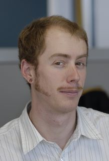

Sean's Research Page

Projects
- Foundation -
Preserving personal digital artifacts
- UIA -
The Unmanaged Internet Architecture
- OpenDHT -
Turn on, put in, get out
- Bamboo -
A robust, open-source distributed hash table
- OceanStore -
Global-scale persistent storage
- IRIS - Infrastructure for
Resilient Internet Systems
- PIER - P2P Information
Exchange and Retrieval
Conferences
Publications
-
Fast, Inexpensive Content-Addressed Storage
in Foundation. Sean Rhea, Russ Cox, and Alex Pesterev. Proceedings of
the USENIX Annual Technical Conference, June 2008.
(Related talk: [PowerPoint]) (Related poster from SOSP'07: [PDF])
-
Persistent Personal Names for Globally
Connected Mobile Devices. Bryan Ford, Jacob Strauss, Chris
Lesniewski-Laas, Sean Rhea, Frans Kaashoek, and Robert Morris.
Proceedings of the 7th USENIX Symposium on Operating Systems Design and
Implementation (OSDI '06), November 2006.
(Related talk: [OpenOffice], [PDF])
(Demo video: [AVI], requires VLC or MPlayer)
-
User-Relative Names for Globally Connected
Personal Devices. Bryan Ford, Jacob Strauss, Chris Lesniewski-Laas, Sean
Rhea, Frans Kaashoek, and Robert Morris. Proceedings of the 5th
International Workshop on Peer-to-Peer Systems (IPTPS '06), February 2006.
-
Finally, a Use for Componentized Transport
Protocols. Tyson Condie, Joseph M. Hellerstein, Petros Maniatis, Sean
Rhea, and Timothy Roscoe. Proceedings of the Fourth ACM Workshop on Hot
Topics in Networks (HotNets-IV), November 2005.
-
Fixing the Embarrassing Slowness
of OpenDHT on PlanetLab. Sean Rhea, Byung-Gon Chun, John Kubiatowicz,
and Scott Shenker. Proceedings of USENIX WORLDS 2005, December 2005.
Awarded best paper!
(Related talk:
[PPT],
[PDF])
-
Non-Transitive Connectivity and DHTs.
Michael J. Freedman, Karthik Lakshminarayanan, Sean Rhea, and Ion Stoica.
Proceedings of USENIX WORLDS 2005, December 2005.
(Related talk by Michael J. Freedman:
[PPT],
[PDF])
-
OpenDHT: A Public DHT Service.
Sean Rhea. Ph.D. Thesis, University of California, Berkeley, August 2005.
-
OpenDHT: A Public DHT Service and Its Uses.
Sean Rhea, Brighten Godfrey, Brad Karp, John Kubiatowicz, Sylvia Ratnasamy,
Scott Shenker, Ion Stoica, and Harlan Yu. Proceedings of ACM SIGCOMM
2005, August 2005.
(Related talk:
[PPT],
[PDF])
-
Handling Churn in a DHT. Sean Rhea,
Dennis Geels, Timothy Roscoe, and John Kubiatowicz. Proceedings of the
USENIX Annual Technical Conference, June 2004.
Awarded best paper!
(Earlier technical report.)
(Related talk:
[PPT],
[PDF])
-
Spurring Adoption of DHTs with OpenHash, a
Public DHT Service. Brad Karp, Sylvia Ratnasamy, Sean Rhea, and Scott
Shenker. Proceedings of the 3nd International Workshop on Peer-to-Peer
Systems (IPTPS '04), February 2004.
-
Tapestry: A Resilient Global-scale Overlay
for Service Deployment. Ben Y. Zhao, Ling Huang, Jeremy Stribling, Sean
C. Rhea, Anthony D. Joseph, and John D. Kubiatowicz. IEEE Journal on
Selected Areas in Communications (JSAC), Vol 22, No 1, January 2004, pp.
41-53.
-
Value-Based Web Caching. Sean Rhea,
Kevin Liang, and Eric Brewer. Proceedings of the Twelfth International
World Wide Web Conference (WWW '03), May 2003.
-
Pond: the OceanStore Prototype. Sean
Rhea, Patrick Eaton, Dennis Geels, Hakim Weatherspoon, Ben Zhao, and John
Kubiatowicz. Proceedings of the 2nd USENIX Conference on File and Storage
Technologies (FAST '03), March 2003. Awarded
best student paper!
(Related talk:
[PPT],
[PDF])
-
Structured Peer-to-Peer Overlays Need
Application-Driven Benchmarks. Sean Rhea, Timothy Roscoe, and John
Kubiatowicz. Proceedings of the 2nd International Workshop on Peer-to-Peer
Systems (IPTPS '03), February 2003.
(The original version of this paper contains an incorrect interpretation
of the results for the find_owner benchmark. The version linked above is in
the Springer-Verlag Lecture Notes in Computer Science and contains updated
data and analysis.)
-
Probabilistic Location and Routing.
Sean C. Rhea and John Kubiatowicz. Appears in Proceedings of the 21st
Annual Joint Conference of the IEEE Computer and Communications Societies
(INFOCOM '02), June 2002.
-
Maintenance-Free Global Data Storage. Sean
Rhea, Chris Wells, Patrick Eaton, Dennis Geels, Ben Zhao, Hakim Weatherspoon,
and John Kubiatowicz. IEEE Internet Computing, Vol 5, No 5,
September/October 2001, pp 40-49.
-
OceanStore: An Architecture for Global-Scale
Persistent Storage. John Kubiatowicz, et. al. Proceedings of the Ninth
International Conference on Architectural Support for Programming Languages
and Operating Systems (ASPLOS '00), November 2000.
Press